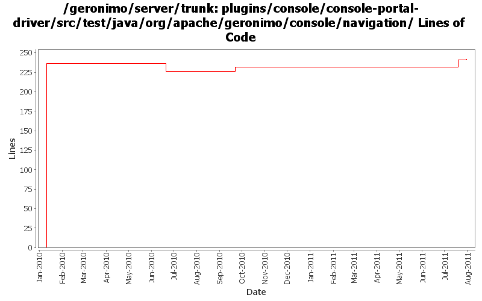

[root]/plugins/console/console-portal-driver/src/test/java/org/apache/geronimo/console/navigation

| Author | Changes | Lines of Code | Lines per Change |
|---|---|---|---|
| Totals | 6 (100.0%) | 278 (100.0%) | 46.3 |
| genspring | 4 (66.7%) | 274 (98.6%) | 68.5 |
| rwonly | 2 (33.3%) | 4 (1.4%) | 2.0 |
GERONIMO-6059 New look and feel of Geronimo 3.0 admin console (Step 1)
3 lines of code changed in 1 file:
GERONIMO-6078 Navigation tree displays wrong links for different roles, patch from Shenghao Fang
13 lines of code changed in 1 file:
GERONIMO-5516 Display basic set of navigation items in a list instead of a tree
25 lines of code changed in 1 file:
GERONIMO-5325 iframe causes some portlets display incorrectly - fix huge blank (Original patch from Ben, Thanks!)
1 lines of code changed in 1 file:
GERONIMO-4994 missed unit test classes when applying patch.
236 lines of code changed in 2 files: